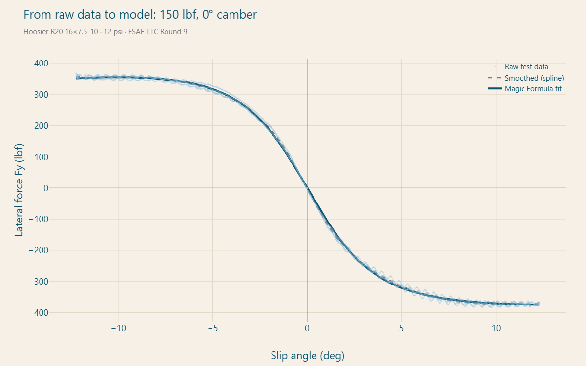
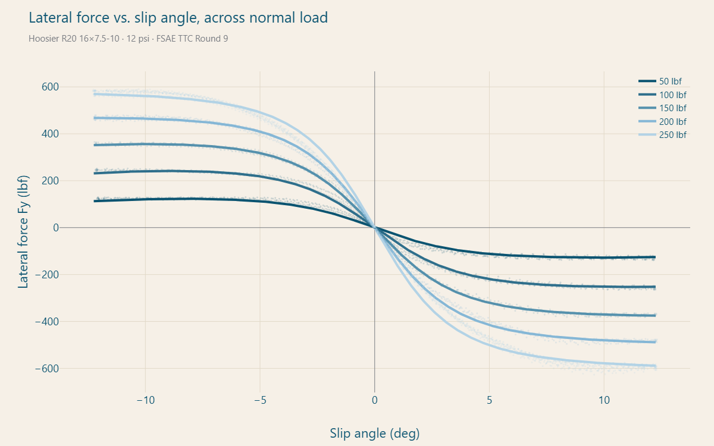
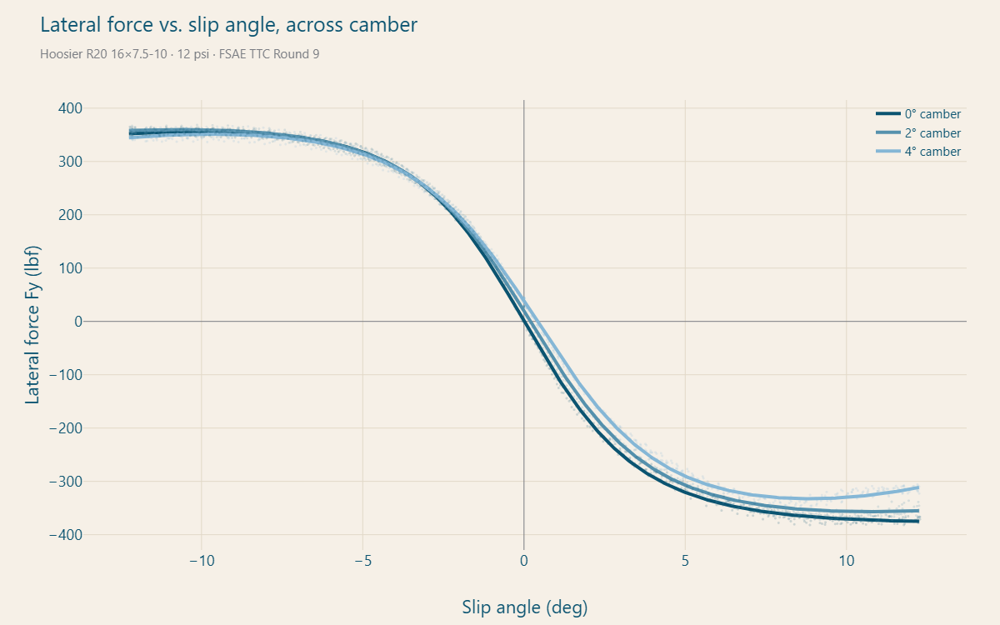
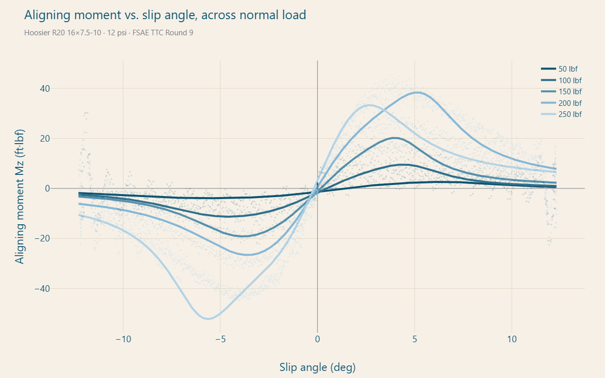
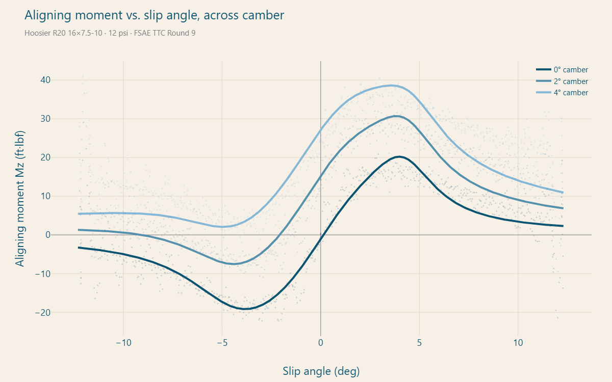

Pacejka Tire Model Development
A tool that turns raw tire test data from Calspan into tire behavior curves and coefficients.
Overview
Historically, Crimson Racing didn't have a tire model and wasn't making data-backed decisions in regards to vehicle and tire performance. This model has been developed to solve that issue and post-process raw data from the TTC.
The model was first built in MATLAB. Now, it's being translated to Python so it is free to run and usable by future team members without a MATLAB license or coding background.
View the code on GitHubccleb152/PacejkaModelv2How it works
- Load a test round. Reads raw Calspan TTC files and identifies the tire (compound, diameter, width) from the file's own metadata.
- Segment the data. Auto-detects every tested normal load and camber angle, then splits the round into one slice per test condition.
- Smooth each sweep. Fits a smoothing spline through the noisy slip-angle sweep.
- Fit the Magic Formula. Solves for the coefficients with nonlinear least squares in stages: base curve first, then load sensitivity, then camber sensitivity.
- Review and export. Plots raw data, smoothed curves, and the fitted model together, and exports the coefficients for the team to use.
The Python rebuild
The original tool is 11 MATLAB scripts. The Python version runs as a Streamlit app: double-click a launcher, load a test round, and press Run Fit.
- Fits every tested load and camber automatically. The MATLAB version was hardcoded to one condition (50 lbf, 0° camber), so its load and camber terms were never truly fit.
- Tested as it's ported. Each function is checked against the original MATLAB output, or hand-calculated values where MATLAB isn't available, before it's considered done.
- Built for a lap sim. The model equations are kept as standalone functions, ready for a future lap-simulation integration.
Next steps/Additional work
- Correlate with real data. The model is fit to machine test data. Its predictions need to be checked against Crimson Racing's own data, then adjusted with scaling factors so the curves match the car on our track surface.
- Estimate 16″ longitudinal data. The TTC brake and drive tests we have only cover the 18″ tires, while the team runs 16″. Longitudinal (braking and acceleration) behavior for the 16″ tire has to be estimated from the 18″ data and the 16″ cornering results.
- Port the longitudinal and overturning models. Bring the MATLAB Fx and Mx fitting into the Python tool, then combine lateral and longitudinal for combined slip (cornering while braking or accelerating).
- Lap sim integration. Feed the fitted model into a lap-time simulation.
Results so far
Output from the Python tool on the Hoosier R20 16×7.5-10 at 12 psi (FSAE TTC Round 9). Faint dots are raw test data; solid lines are the fitted model.





Sources
- H. B. Pacejka, Tire and Vehicle Dynamics, 3rd ed. Oxford: Butterworth-Heinemann, 2012.
- W. F. Milliken and D. L. Milliken, Race Car Vehicle Dynamics. Warrendale, PA: SAE International, 1995.
- I. J. M. Besselink, A. J. C. Schmeitz, and H. B. Pacejka, “An improved Magic Formula/Swift tyre model that can handle inflation pressure changes,” Vehicle System Dynamics, vol. 48, sup. 1, pp. 337–352, 2010.
- C. H. Reinsch, “Smoothing by spline functions,” Numerische Mathematik, vol. 10, pp. 177–183, 1967.
- FSAE Tire Test Consortium, Calspan Tire Research Facility, Rounds 6, 8 & 9 test data. millikenresearch.com/fsaettc